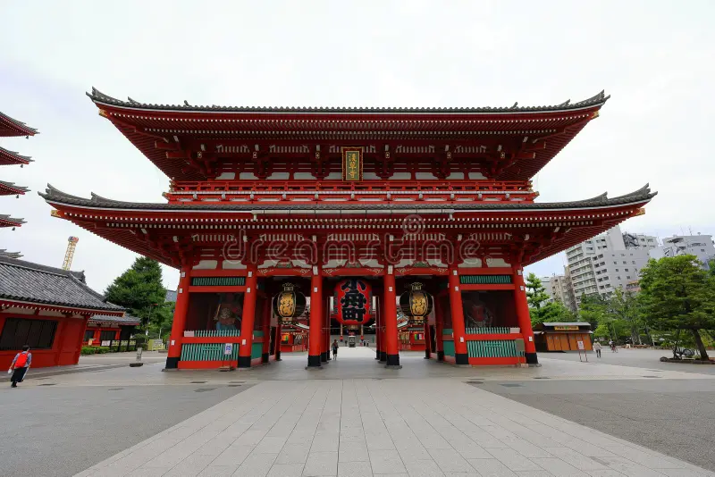
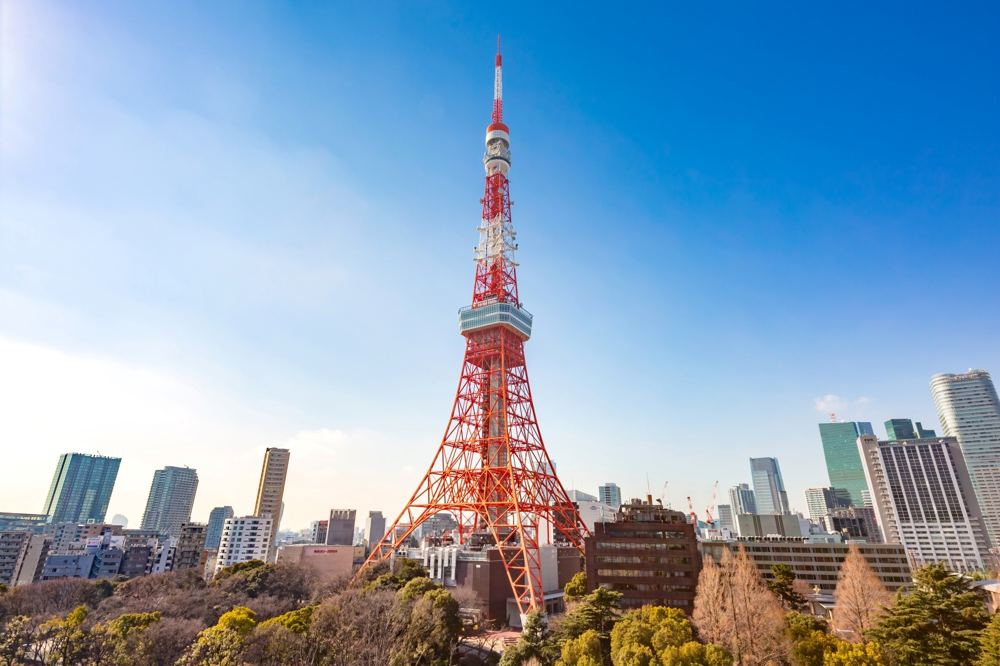
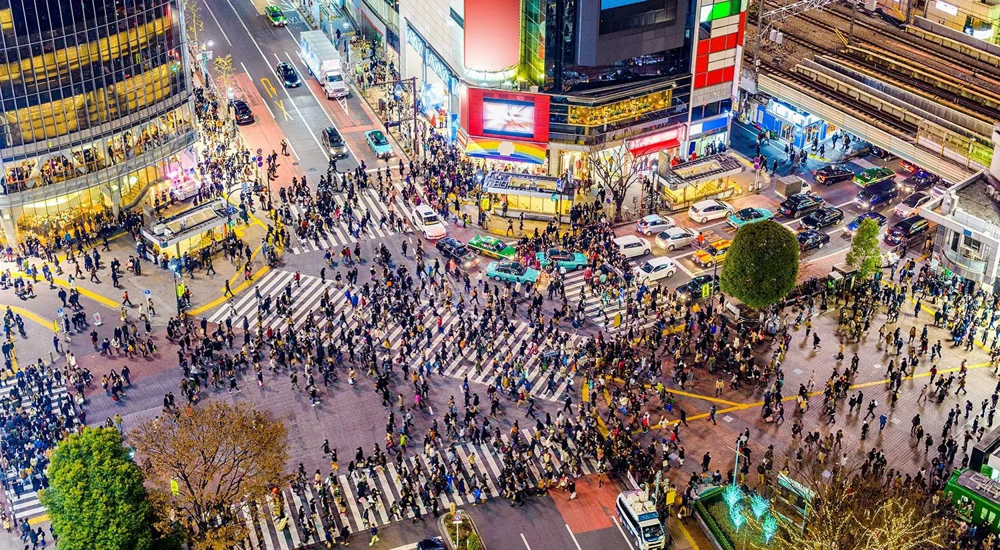
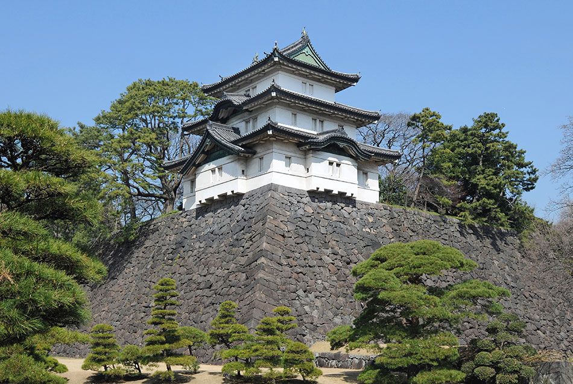

Sensō-ji
Uno dei templi buddhisti più antichi e visitati di Tokyo.
Costruzione: dal VII secolo

Dai templi antichi ai quartieri ultramoderni, Tokyo offre un viaggio tra cultura, tecnologia e sapori. Tra una visita ad Asakusa e una passeggiata a Shibuya, ogni quartiere svela un volto diverso della città.

Uno dei templi buddhisti più antichi e visitati di Tokyo.
Costruzione: dal VII secolo

Una torre panoramica ispirata alla Torre Eiffel, simbolo della Tokyo moderna.
Inaugurazione: 1958

Uno degli incroci pedonali più celebri e animati al mondo.
Luogo: quartiere di Shibuya

Residenza imperiale del Giappone, circondata da giardini e fossati nel centro della città.
Residenza imperiale dal: 1888
Le date indicano il periodo di fondazione o costruzione principale.
Scegli la durata del viaggio e adatta le tappe agli orari di apertura e ai tuoi interessi.
3 giorni
Budget indicativo: €390–€660 a persona
7 giorni
Budget indicativo: €910–€1.540 a persona
14 giorni
Budget indicativo: €1.820–€3.080 a persona
Stima per persona per l'intero soggiorno: alloggio di fascia media in camera doppia, pasti, trasporti urbani e ingressi principali. Voli, shopping e assicurazione esclusi. Le tariffe effettive variano per stagione e prenotazione.